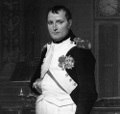

Napolyon Bonapart (1769–1821) Fransız bir generaldi. 19. yy’ın başlarında büyük bir imparatorluk kurdu. Avrupa çapında bir dizi yıkım ve sosyal karmaşanın ortaya çıkmasına neden oldu. 1799 yılında Fransa’da iktidara geldi. Beş yıl sonra kendisini imparator ilan etti. 1815 yılında azledilip sürgüne gönderilene kadar bütün kıtada terör estirdi.

Napolyon Savaşları toplamda yirmi yıla yakın sürdü. Avrupa’nın bütün askeri güçleri bu savaşlara dahil oldular. 1812 yılı savaşta bir dönüm noktası oldu. Napolyon, Rusya’yı işgal etme girişiminde bulundu ve başarısız oldu. Yenilgisi Fransız ordusunun zayıflığını ortaya serdi. 1813 yılında Dresden Savaşı’nda ve iki yıl sonra Waterloo Savaşı’nda onu yenecek olan Avrupa güçlerinden oluşan koalisyona cesaret verdi.
Her şeye karşın Napolyon, hukuki, politik ve sosyal alanda önemli etkiler yaratmıştır. Fransız Devrimi’nin ideallerinin kıtanın her yerine yayılmasına neden oldu. Pek çok eski monarşiyi yıktı veya zayıflattı. Fransız hukuku günümüzde hâlâ Batı Avrupa hukukunun temelini oluşturmaktadır. Savaşı sonlandıran barış anlaşması ise kıtanın haritasını değiştirmiştir.
Napolyon, Korsika Adası’nda doğdu. Paris’teki Fransız Harp Akademisi’ne gitti. 1789 yılındaki Fransız Devrimi sırasında bir topçu alayında görev yapıyordu. Cumhuriyetçileri destekledi ve devrimci lider Maximilien Robespierre’in (1758-1794) müttefiki oldu. Napolyon 1795 yılında kralcıların düzenlendiği bir isyanı bastırmasıyla ün kazandı. Daha sonra Fransa’nın İtalya, Avusturya ve Mısır’ı istilasını yönetti.
1799 yılında Napolyon bir darbe yoluyla iktidarı ele aldı. Devrimi desteklemesine ve hatta kendi kişiliğinde onun değerlerini cisimleştirmesine rağmen 1804 yılında Fransız monarşisini yeniden kurdu. Kendisini imparator ilan etti. Almanya, İspanya, Portekiz, Belçika, Hollanda, İtalya, Rusya ve Avusturya’ya savaş açtı. Bu arada zaten Atlantik’in kontrolü için İngiliz Kraliyet Donanması ile mücadele halindeydi.
Napolyon ilk olarak 1814 yılında görevden alındı. Elbe Adası’na sürgüne gönderildi. 1815 yılında kaçtı ve Paris’e geri döndü. “Yüz Gün” olarak adlandırılan bir isyan organize etti. Waterloo’da yenildi ve Aziz Helena Adası’na sürgüne gönderildi. 51 yaşındayken sürgünde öldü.
Ek Bilgiler
1- Napolyon, İtalya’daki küçük Papalık Devletleri’ni (Papal States) ele geçirmeye çalıştığı için Papa 7. Pius (1740-1823) tarafından aforoz edildi. Fransa buna Papa’yı kaçırarak karşılık verdi. Papa beş yıl sürgünde kaldı.
2- Napolyon’un doğum yeri Korsika 1768 yılında Fransa’nın parçası olmuştur. Napolyon’un ana dili İtalyanca’ydı. Fransızca’yı Korsika aksanı ile konuşuyordu
3- İngiliz hükümeti, 20. yy’ın başlarına kadar Aziz Helena Adası’na devlet düşmanlarını göndermeye devam etti.